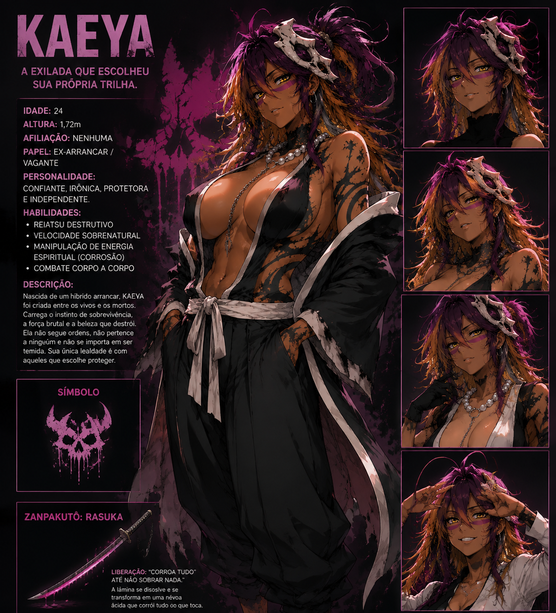

Message Bridge
Replica mensagens entre os dois lados da comunidade, mantendo o fluxo de conversa conectado.
Stoat → Discord
Discord → Stoat
Uma pequena ponte entre comunidades.
Um projeto que pretende se tornar muito maior.
Por enquanto, Mayleena cuida da parte simples: levar mensagens de um lado para o outro entre Stoat e Discord. No futuro, ela vai ganhar personalidade, memória e novas formas de ajudar.

Mayleena nasceu como um bot pequeno, feito para resolver uma necessidade específica: conectar Stoat e Discord.
Ela ainda está no começo. A ideia é manter a base leve e funcional enquanto o projeto cresce aos poucos — primeiro como bridge, depois como bot mais completo e, eventualmente, como uma assistente virtual própria.
Por enquanto, o foco é uma coisa só: fazer a ponte funcionar bem.
Replica mensagens entre os dois lados da comunidade, mantendo o fluxo de conversa conectado.
Stoat → Discord
Discord → Stoat
Uma interface simples para descobrir os recursos disponíveis no bot.
/help
Mostra informações básicas sobre a Mayleena e o estado atual do projeto.
/about
Nada disso precisa acontecer de uma vez. A ideia é construir a Mayleena por etapas.
Stoat ↔ Discord
Comandos, utilidades e personalidade.
Conversação, contexto e ferramentas próprias.
Uma presença virtual independente do simples bridge.
E esse é justamente o ponto.